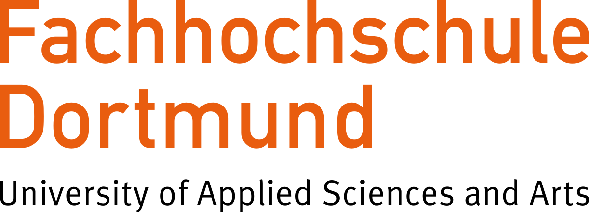

<!-- <div *ngIf="environment.name != 'production'" class="uat-label">{{environment.name}}</div> -->
<div class="uat-label">UAT</div>
<ng-container *ngIf="isAuthenticated(); else unauthenticated">
  <app-side-nav-outer-toolbar title="{{appInfo.title}}">
    <router-outlet></router-outlet>
    <app-footer>
      <div></div>
      Project Apollo is a study project by MDT students Team 01
      <span>(boluwatife.alawode001&#64;stud.fh-dortmund.de , mustafa.ali003&#64;stud.fh-dortmund.de)</span>
      for Mini-Projects module (Summer 2024) at FH Dortmund.
    </app-footer>
  </app-side-nav-outer-toolbar>
</ng-container>

<ng-template #unauthenticated>
  <app-unauthenticated-content></app-unauthenticated-content>
  <div class="footer">
    <div></div>
    Project Apollo is a study project by MDT students Team 01
    <span>(boluwatife.alawode001&#64;stud.fh-dortmund.de , mustafa.ali003&#64;stud.fh-dortmund.de)</span>
    for Mini-Projects module (Summer 2024) at FH Dortmund.
  </div>
</ng-template>